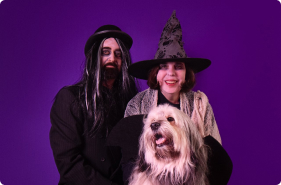
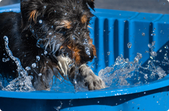
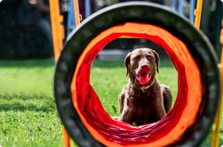

mir bei WhatsApp!

Mit jeder Photobestellung spenden Sie
für Tiere in Not
Da bin ich
Willkommen in der Welt, in der Ihr Liebling zum Star wird! Ich bin Julia - eine Fotografin und Hundefachfrau mit Erfahrung in der Erstellung fröhlicher und bunter Fotoshootings mit Ihren Haustieren. In meiner Arbeit ist das Wichtigste für mich das Wohlbefinden und die Freude Ihrer Lieblinge. Ich freue mich darauf, Sie in meinem Fotostudio in Werdohl oder kann zu Ihnen an jeden Ort in Nordrhein-Westfalen kommen und meine magischen Werkzeuge mitbringen.
Lassen Sie Ihre Lieblinge eine Rolle in einem bunten Spektakel spielen! Und ich werde Ihnen helfen, begeisterte Zuschauer zu werden.
Was kostet
-
Mehr sehen
Studio
Mein Fotostudio ist wie ein zauberhaftes Theater, in dem jeder seine Rolle spielen kann! Ihre geliebten Tiere sind die Hauptdarsteller, Sie sind die begeisterten Zuschauer, oder vielleicht ist Ihnen eine Nebenrolle zugedacht. Und ich bin der Regisseur dieses Theaters. Es spielt keine Rolle, wer von uns die Handlung entworfen hat, welche Rollen wir spielen oder welches Requisit auf der Bühne steht, denn jede unserer Aufführungen verdient es, für immer in Erinnerung zu bleiben. -
Mehr sehen
Momente
Jeder Moment im Tierleben birgt eine einzigartige Geschichte. Ich fotografiere eure Tiere dort, wo sie ganz sie selbst sind – in ihrer natürlichen Umgebung. Mit einem feinen Gespür für den richtigen Moment und einem Auge für das Detail, fange ich die Einzigartigkeit und die Persönlichkeit jedes Tieres ein. Ob überraschendes Spiel im Garten oder ausgelassene Freude beim Spaziergang, ich bin bereit, eure Geschichten überallhin zu folgen. -
Mehr sehen
Reportage
Jedes Event ist voll einzigartiger Momente – von Aufregung bis zu Überraschungen. Meine Mission ist es sondern die Geschichte Ihres Events zu erzählen - die Atmosphäre, die Emotionen und die vielen kleinen Details einzufangen, die zusammenkommen, um Ihre Veranstaltung unvergesslich zu machen. Mit einem aufmerksamen Blick für die besonderen Interaktionen zwischen Tieren und Menschen schaffe ich eine lebendige, emotionale Erzählung Ihres besonderen Tages.